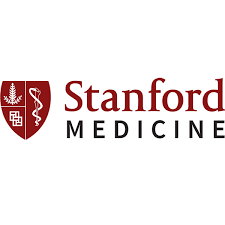
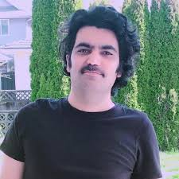

I am an AI Researcher at Stanford Medicine (working with Prof. Jayakumar Rajadas) and collaborate with Prof. Isabeau Prémont‑Schwarz at Mila. I also serve as Chief AI Scientist at NellaDerm Inc.
My research bridges computational neuroscience, AI theory, and healthcare applications. I'm honored to be a Young Scientist Award 2022 recipient, a Google Research Award (2025), and a TEDxSanabad speaker. I have edited volumes published by Springer Nature.
I am fascinated by the intersection of artificial intelligence, neuroscience, and medicine. My work focuses on developing intelligent systems that enhance human understanding and improve medical outcomes. I lead AI research initiatives in healthcare, with current projects spanning computational models of cognition, AI for dermatology, and multimodal learning for clinical applications.
My contributions include AI-driven platforms for eczema management (Myeczema.app), open-source optimization libraries (Binary-Survivor), and interdisciplinary collaborations bridging AI theory with real-world medical challenges.